Exposure and contrast
You set the brightness and contrast of the print as you would in a darkroom: how much light the film received, how it was developed, how much light the paper received and how it was developed. Each of these controls acts differently on the highlights and the shadows.
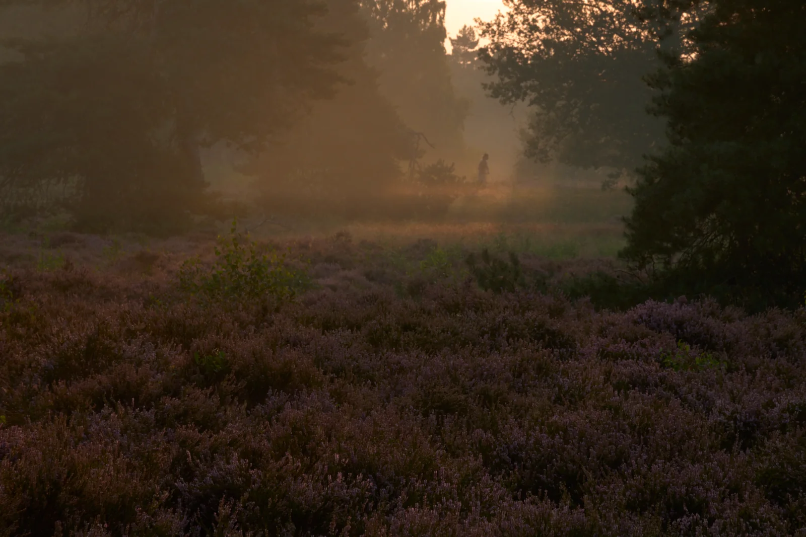

Order of work
- Film exposure sets where the scene sits on the film curve: how much detail the shadows and highlights hold.
- Print exposure sets the brightness of the print.
- Print gamma sets the overall contrast of the print.
- Print highlight shape and Print shadow shape refine the two ends of the scale.
- Preflash, in a very small dose, softens the highlights when nothing else is enough.
Leave film changes (negative gamma, push/pull) for the end or for deliberate experiments: they also change colour.
Film and print exposure
Film exposure
Top of the panel
- Range
- −8 to +8 EV
- Default
- 0 EV
- Step
- 0.1 EV
The amount of light on the film. The print is “exposed” for 0 EV, so more light on the film gives a denser negative and a brighter print. With automatic metering on, this is an offset from the metered value.
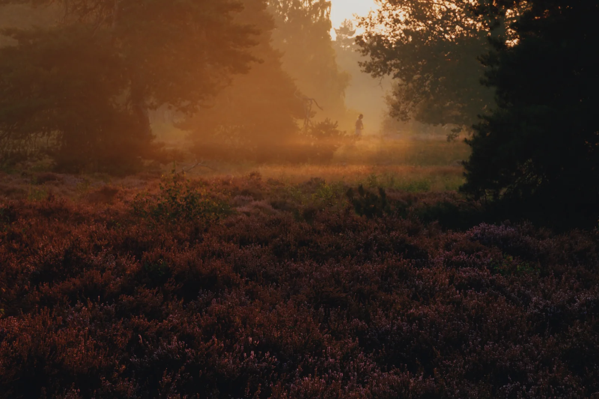
−1 EVDarker, more detail in the highlights. 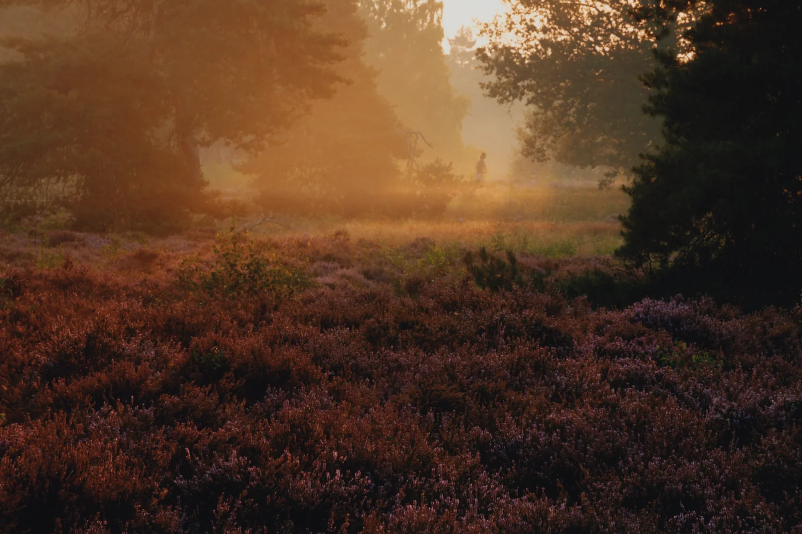
−0.5 EV 0 EVAutomatic metering. 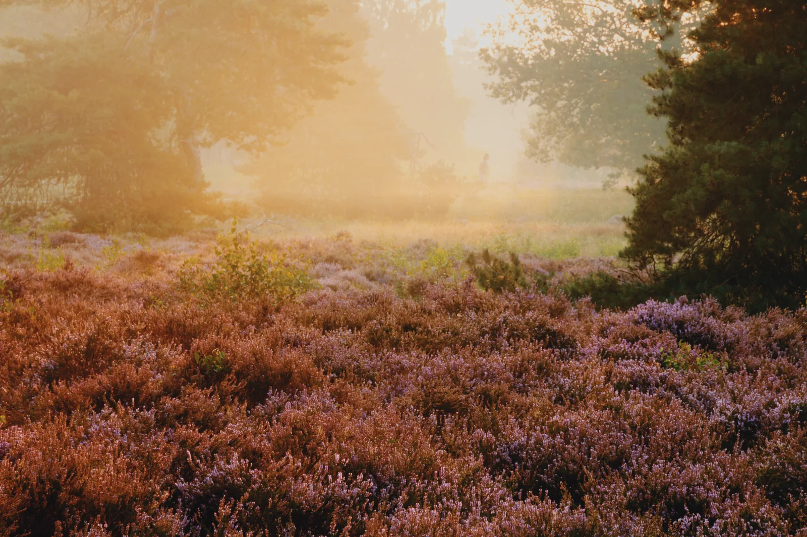
+1 EVBrighter; the highlights lose detail.


When to use
The first control for every photo. Dark scenes with a bright area (interiors, backlight, dusk) usually need −0.3 to −1 EV, because metering pulls them towards grey and burns out the bright parts.
Pitfalls
The direction is the opposite of Print exposure. At large values colour and grain change too, because the scene moves along the film curves.
Print exposure
Top of the panel, Print Simulation only
- Range
- −5 to +5 EV
- Default
- 0 EV
- Step
- 0.1 EV
The exposure time of the paper. More light on the paper gives a darker print. It acts more strongly on the shadows than Film exposure.
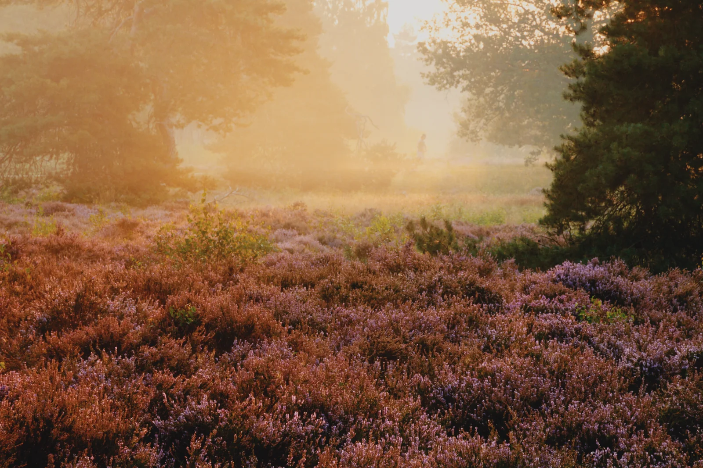
−0.5 EVBrighter print. 0 EV +0.5 EVDarker, denser shadows.


When to use
To set the brightness once you are happy with how the tones sit on the film. Typically ±0.1–0.5 EV.
Look strength
Top of the panel
- Range
- 0–100%
- Default
- 100%
Mixes the finished print with the C1 image from before the simulation. Lower values can make the image darker and the shadows deeper, because the shadows of the digital image come back in.
When to use
At the end, when the look is already set with the stocks and exposure and you only want to soften it.
Pitfalls
This is not a contrast control. It also dilutes the colour and grain of the film. If you lower Strength because the print is too hard, use Print gamma and Print highlight shape instead.
Exposure metering
Automatic film exposure
Under the Defaults button, on one row with Metering
- New look
- on
Before exposing the film, the panel meters the image like a light meter and places the midtones on 18% grey. Film exposure becomes an offset from this reading. Metering largely evens out brightness changes you make in C1.
On, Center weighted 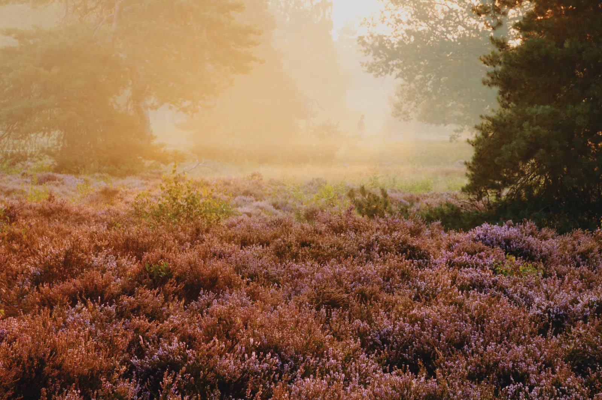
On, MedianThe brightness can differ slightly from Center weighted. 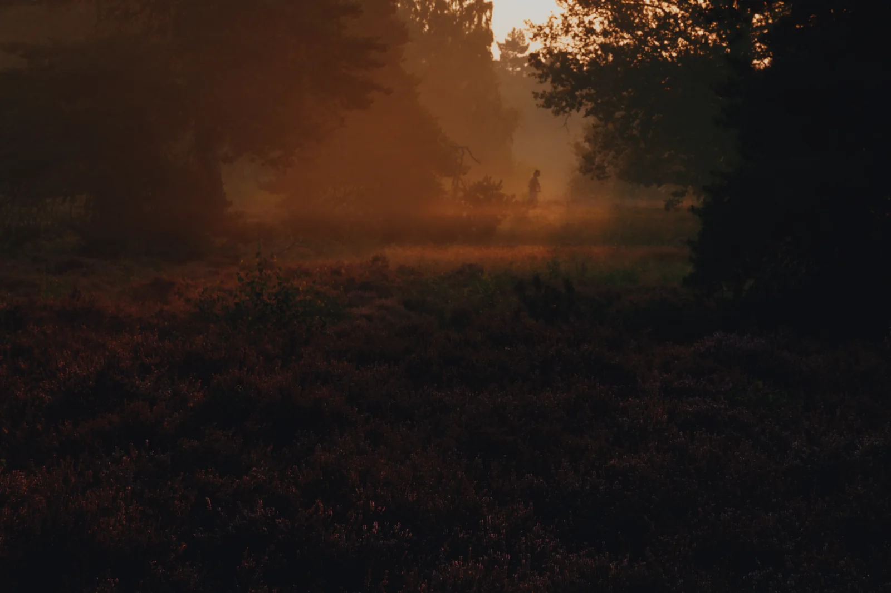
OffThe film is exposed directly with the C1 image.


When to turn it off
When you want a series of photos taken in the same light to get identical exposure, or when you set brightness deliberately in C1. Metering works separately for each photo, so brightness can vary slightly across a series.
Pitfalls
Metering is not included in a LUT export: a LUT does not know the specific photo (chapter 11).
Metering
Under the Defaults button, next to Automatic film exposure
- Options
- Center weighted, Median
- Default
- Center weighted
The list is inactive when Automatic film exposure is off. Center weighted meters with emphasis on the centre of the frame, like a classic in-camera light meter. Median takes the middle brightness of the whole frame, regardless of composition.
When to use
Median for scenes where the centre of the frame is unusually bright or dark and the rest is typical, for example a backlit figure in the middle.
Print contrast
Print gamma
Enlarger and print
- Range
- 0.1–2
- Default
- 1
- Step
- 0.05
The contrast of the paper. It changes the slope of the paper curve; along the way it also moves the black and white of the print. Below 1 the print is soft, above 1 it is hard.
0.8Lighter black, darker white. 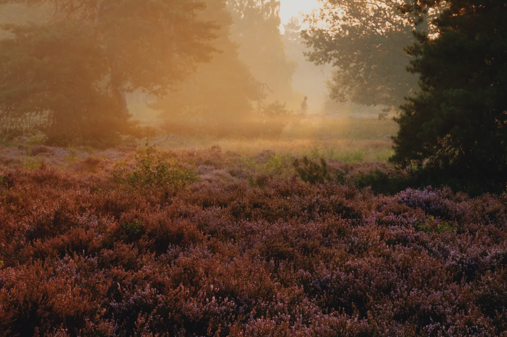
0.9 1Paper profile unchanged. 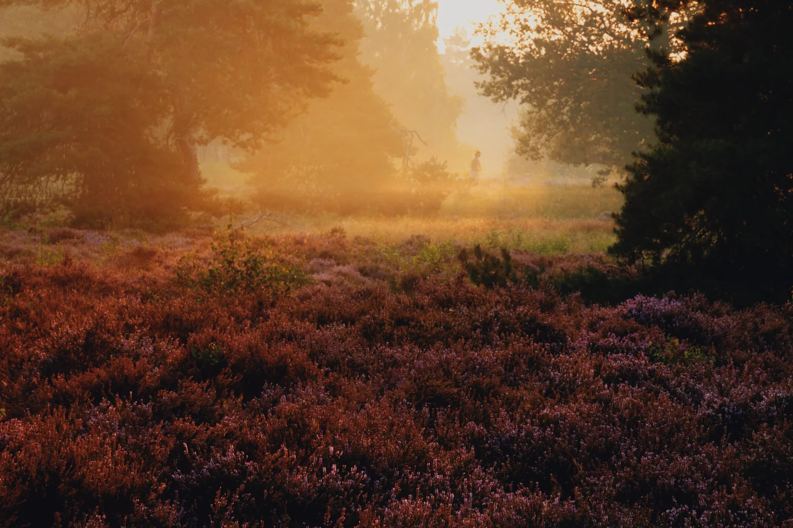
1.25Deeper black, stronger colours.


Typical values
0.8–0.9 in harsh sun and high-contrast scenes. 1.1–1.5 in flat light, fog or on an overcast day. Advice from the Spektrafilm forum (1.3–1.5) usually concerns exactly such flat photos.
Print highlight shape
Enlarger and print
- Range
- −1 to 1
- Default
- 0
The shape of the bright end of the paper curve. The paper white and black stay where they are; only the transition to white changes.
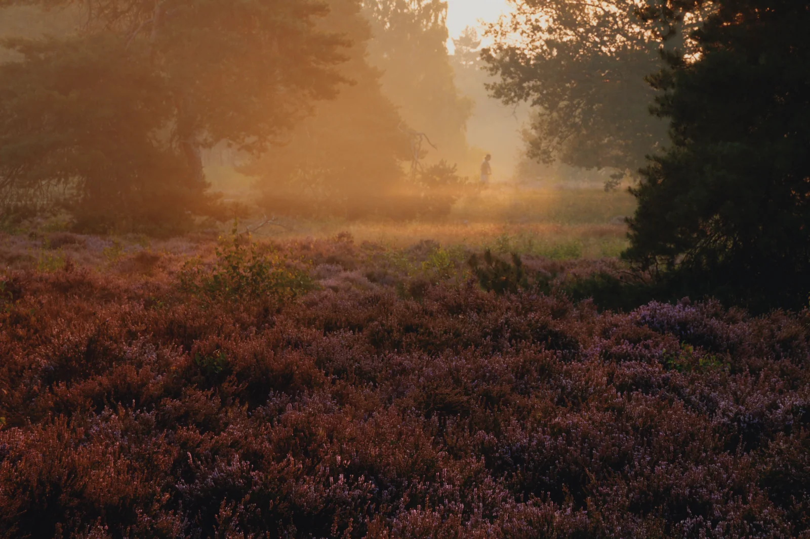
−1Softer highlights with more detail. 0 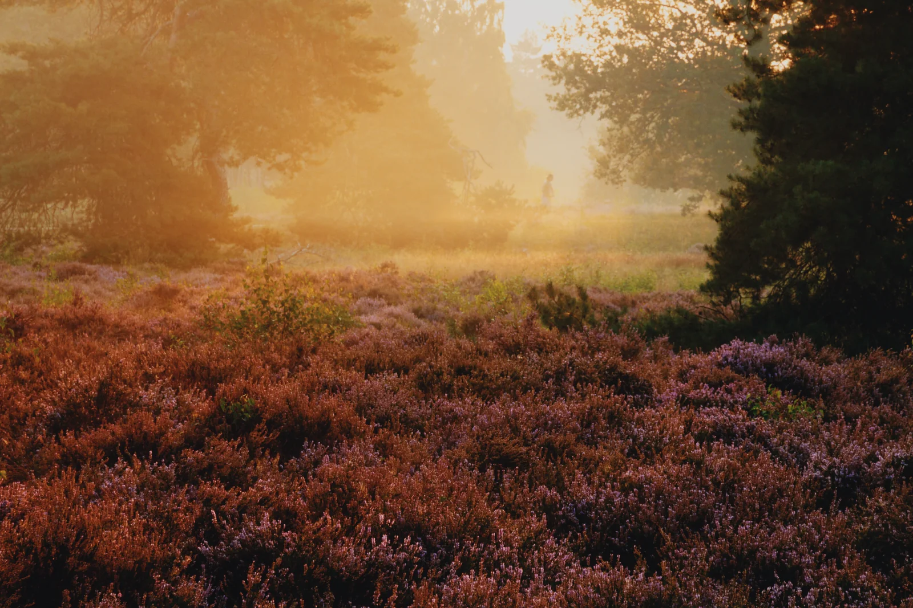
+1Brighter, flattened highlights.


In the brightest part of the frame, −1 makes the highlights darker and gives them a wider tonal range (more detail). At +1 the tonal range narrows and the highlights move closer to paper white.
When to use
Negative values (−0.3 to −0.6) when clouds, white walls or skin in sunlight lose detail. Positive values when you want a bright, “high-key” look.
Print shadow shape
Enlarger and print
- Range
- −1 to 1
- Default
- 0
The shape of the dark end of the paper curve. Positive values open the shadows, negative values deepen them. The paper black stays where it is.
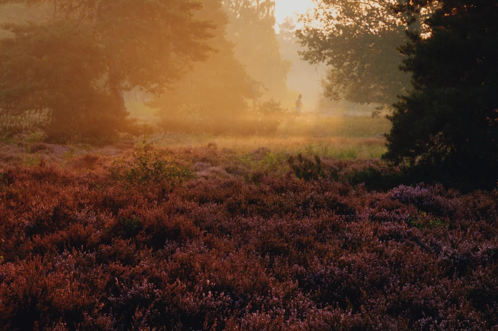
−1Deeper shadows. 0 +1Open shadows.


Print push / pull
Enlarger and print
- Range
- −2 to 2 EV
- Default
- 0
Longer or shorter development of the paper. Contrast changes by a factor of 20.25·EV, so at ±2 EV by about ×1.41 or ×0.71. It works much like Print gamma.
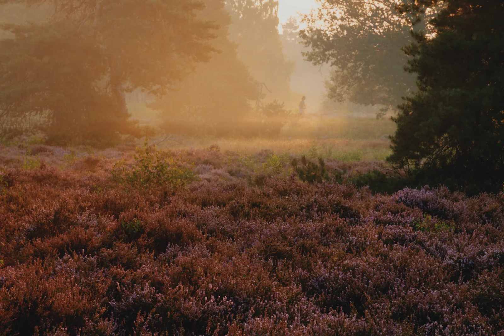
−1Soft. 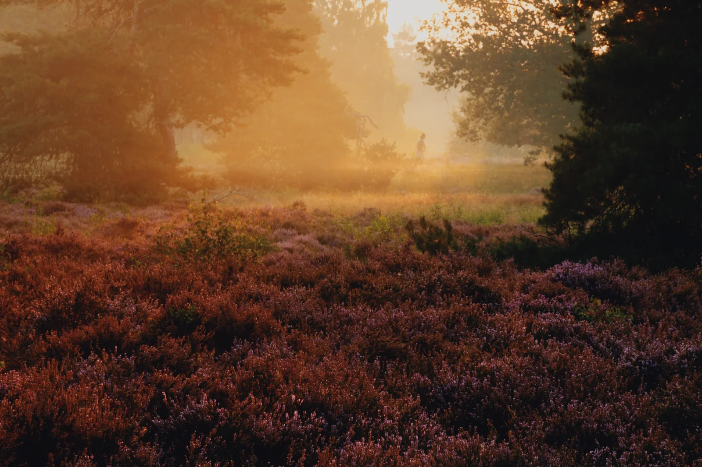
+1Hard.


Preflash exposure
Enlarger and print
- Range
- 0–1, step 0.001
- Default
- 0
A short, even exposure of the paper before the main exposure. It adds density where the paper would get little light, that is, in the highlights of the print. The paper white turns greyer and the highlights gain detail. Useful values are 0.005–0.03, which is why the field takes three decimal places; it is easiest to type the value on the keyboard.
0 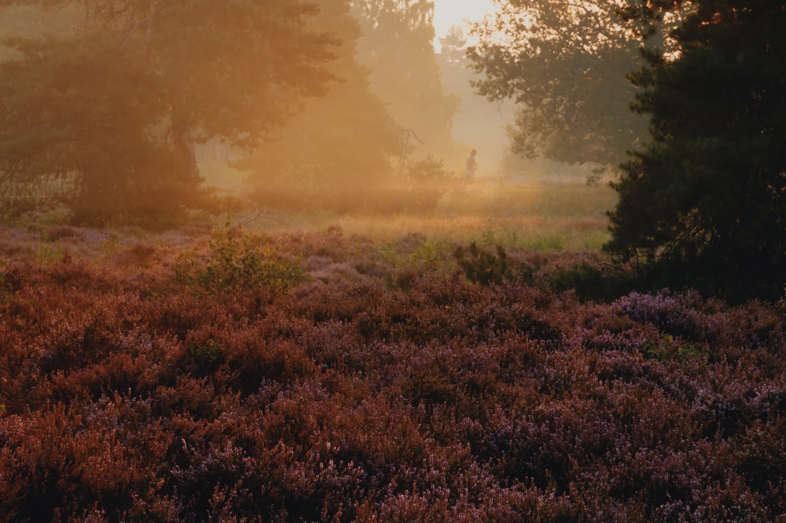
0.01Barely visible softening of the highlights. 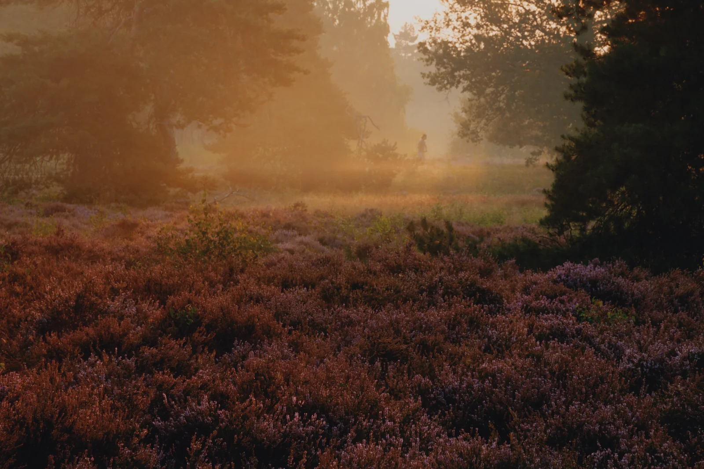
0.02Clearly darker highlights. 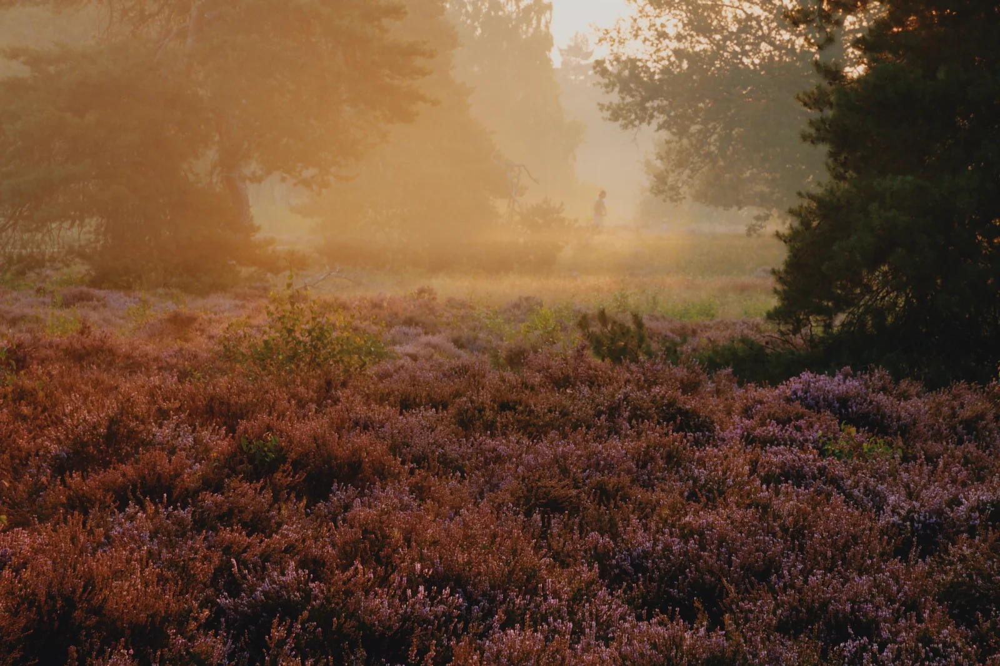
0.02 and Print exposure −0.3Brightness restored, softer contrast. 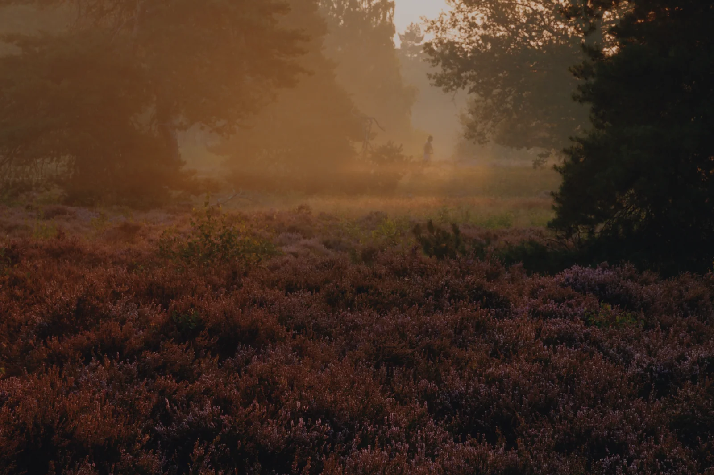
0.05Already too much: a grey, dull print.


As preflash increases, the brightest part of the frame gets darker and gains tonal detail, while the shadows barely change. Beyond small doses the extra detail hardly grows and the print only gets greyer.
Typical values
0.01–0.02. Always together with lowering Print exposure by 0.2–0.4 EV to bring the brightness back.
Pitfalls
The slider is very sensitive: 0.05 is already a strong effect, and 0.4 gives an almost black image. The field takes three decimal places (step 0.001), so you can set small doses such as 0.005 precisely. Type it into the number field instead of dragging the slider.
Preflash magenta, Preflash yellow
Enlarger and print
- Range
- −60 to 60 CC
- Default
- 0
Filtration of the preflash light. It tints mainly the highlights of the print, for example cool highlights with warm shadows. They work only with a non-zero Preflash exposure. The direction is the same as for enlarger filtration (chapter 6): more magenta gives greener highlights, more yellow gives bluer ones.
Preflash 0.05No preflash filtration. Magenta +40Highlights towards green. Magenta −40Highlights towards magenta. Yellow +40Highlights towards blue. Yellow −40Highlights towards yellow.


These examples use Preflash exposure 0.05 (deliberately strong so the tint is visible; on its own it darkens the highlights). In the brightest part of the frame, magenta +40 raises green and −40 lowers it; yellow +40 raises blue and −40 lowers it. The midtones take on the tint too; the deepest shadows stay unchanged.
Developer exhaustion
Enlarger and print
- Range
- 0–100%
- Default
- 0
Exhausted paper developer. It softens the dark part of the paper curve while keeping the middle grey: less contrast and density where the paper received a lot of light. Zero keeps the original paper profile.
Film contrast
Negative gamma
Film development
- Range
- 0.1–2
- Default
- 1
A multiplier for the slope of the negative curves. Below 1 the negative is soft, above 1 it is hard.
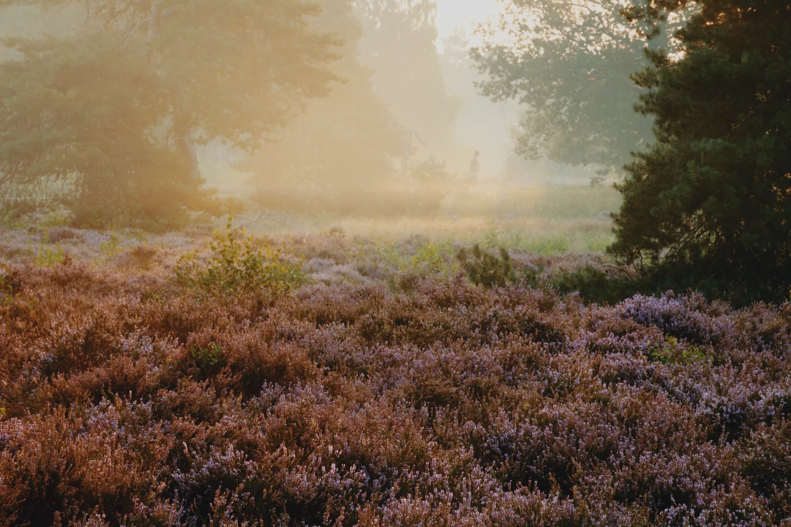
0.8Clearly brighter, slightly weaker colours. 1 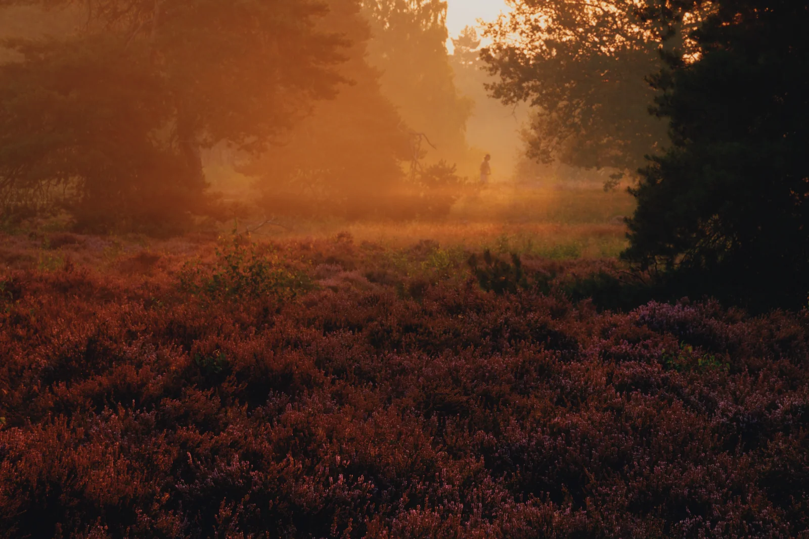
1.2Clearly darker, colours almost unchanged.


Pitfalls
In the simulation it mainly changes the brightness of the print (0.8 brightens it noticeably and 1.2 darkens it), and the contrast only a little. For contrast, Print gamma is better. The author of the OFX version considers negative gamma less physical than push/pull.
Film push / pull and Push / pull model
Film development
- Range
- −2 to 2 EV
- Default
- 0, Standard model
Extended or shortened development of the negative. In the Standard model it translates into a negative contrast multiplier derived from Kodak development times: about ×0.83 at −1, ×1.22 at +1 and ×1.56 at +2. The Experimental model changes development separately for each layer and tonal range.
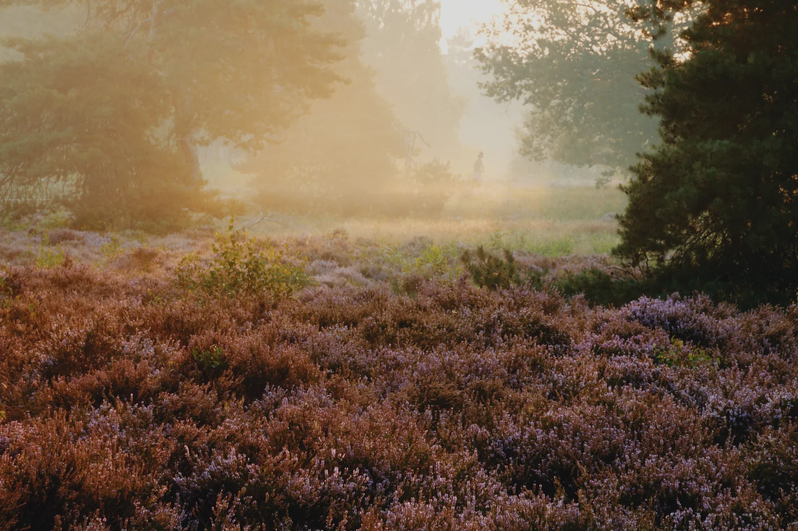
Pull −1Brighter, slightly weaker colours. Push +1Darker, more detail in the highlights.


Pitfalls
It does not add the fog or stronger grain that real push processing gives. For the real look of pushed film, use the Portra 800 (Push 1) and (Push 2) profiles, which come from curves published by Kodak.
Print white and black
A print on paper does not reach the pure white or black of the screen: the brightest areas stay below screen white and the darkest above screen black. That is what a real print looks like. When you want the full screen range, in Spektrafilm optics › Scanning first turn on Enable scanner controls, then Correct white level and Correct black level. They work in Print Simulation and in the inverted negative scan. Details in chapter 9.
No correctionPaper white and paper black. 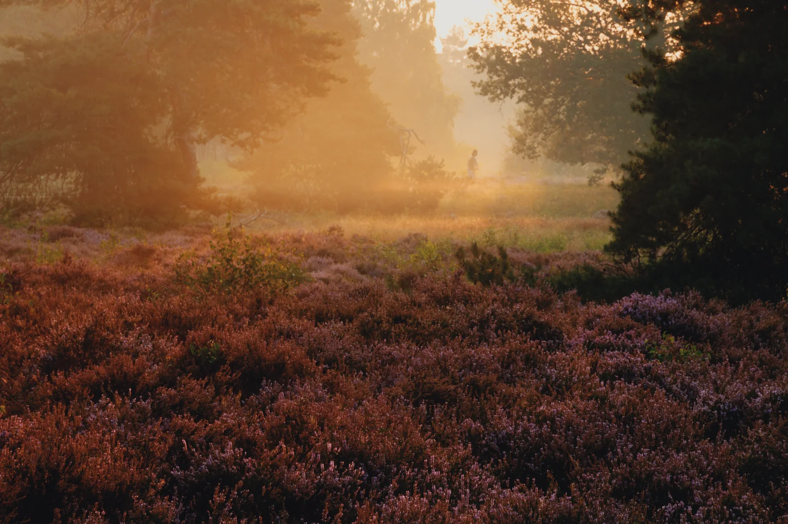
Correct white levelBrighter white. 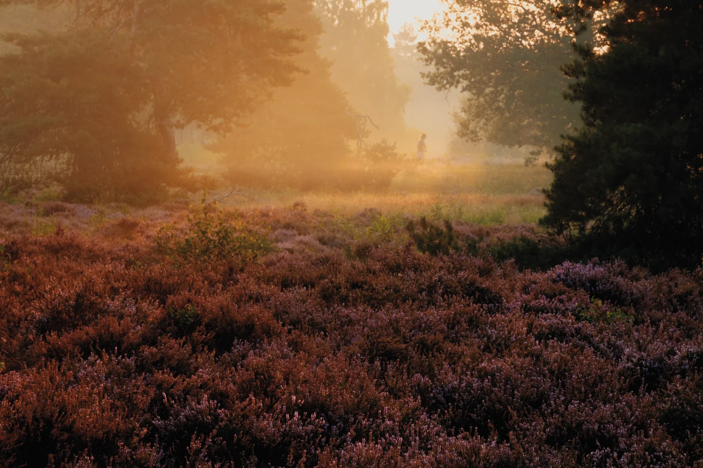
White and blackBlack close to screen black.


A soft print step by step
A recipe for photos with harsh contrast that works on most scenes. The values are a starting point.
- Film exposure −0.3 to −0.5 EV.
- Print gamma 0.85.
- Print highlight shape −0.3 to −0.5.
- If the highlights are still too bright: Preflash exposure 0.01 and Print exposure −0.2 EV.
- Finally, set the brightness with Print exposure alone.
Default 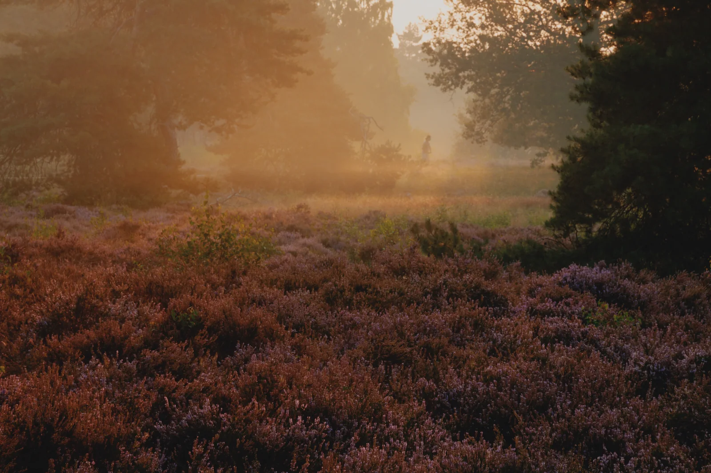
Soft printFilm −0.5 EV, Print gamma 0.85, preflash 0.01, Print −0.2 EV.